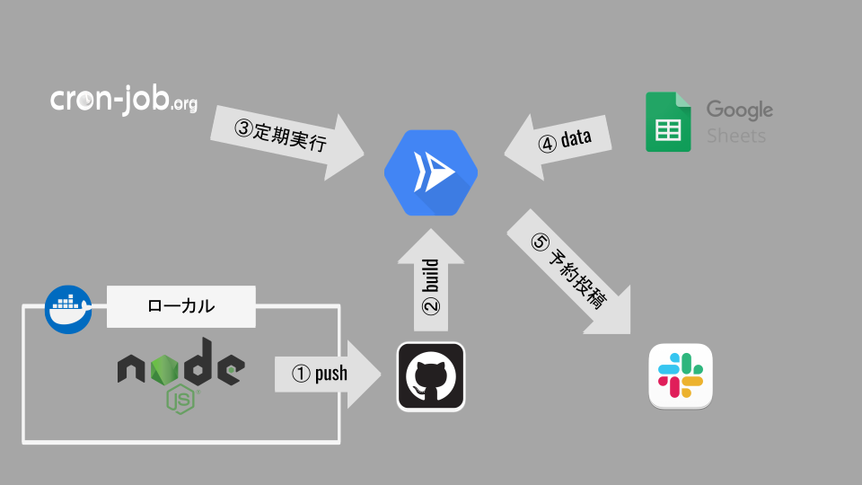

講義の連絡を自動化した話

もくじ
-
自己紹介
-
現状と困りごと
-
やったこと
-
使った技術
自己紹介
| Name | 大杉太郎（たろさん，たろ先生） |
| Age | 1987 年生まれ |
| Place | 茨城県 -> 北海道 -> 東京都 -> 福岡県 |
| Career | ジーズアカデミー福岡主任講師 |
| Like1 | Rust，Node.js，本，旅行，断捨離 |
| Like2 | 🥃, 🍺, 🍷 |
| @taroosg |
現状と困りごと
3 - 4 ヶ月のコースを年 2 - 3 回実施
（JavaScript と PHP メイン，だいたい毎回同じ）
講義には案内が必要
（Slack で実施）
-
次回までに必要な準備
-
明日の講義の内容
-
etc
多い（しかも大体同じ内容）
| 曜日 | 講義有無 | 必要な作業 |
|---|---|---|
| 月 | ||
| 火 | 講義 | 講義資料の展開，講義の案内 |
| 水 | 次回講義の案内 | |
| 木 | ||
| 金 | 講義 | 講義資料の展開，講義の案内 |
| 土 | 講義 | 講義資料の展開，講義の案内 |
| 日 | 次回講義の案内 |
＿人人人人人人人人人人人人人人人＿
＞ 定型的な投稿がめんどくさい ＜
￣Y^Y^Y^Y^Y^Y^Y^Y^Y^Y^Y^Y^Y￣
＿人人人人人人人人人人人人人人人＿
＞ そうだ，botにやってもらおう ＜
￣Y^Y^Y^Y^Y^Y^Y^Y^Y^Y^Y^Y^Y￣
やったこと
必要な要件
-
投稿内容はスプレッドシートで管理する．
- 投稿するテキスト，日時，など
-
シートの内容に従って自動投稿する．
-
次回以降の投稿内容を変更したら反映される．
方針
-
スプレッドシートに投稿する内容と日時を書いておく．
-
毎日 node.js でデータ取得して，日時が当日のものを Slack に予約投稿する．
使用技術

スプレッドシートのデータを取得するコード
// スプレッドシートからデータを取得する関数
const execAPI = async (spreadsheetId, range) => {
const auth = await google.auth.getClient({
scopes: ["https://www.googleapis.com/auth/spreadsheets.readonly"],
});
const apiOptions = {
auth,
spreadsheetId,
range,
};
const result = await sheets.spreadsheets.values.get(apiOptions);
return result.data.values;
};
// スプレッドシートの必要な行のみ抽出して整形する関数
export const createFantasticData = (rawData) =>
rawData
.filter((x, i, arr) => i !== 0 && hasEmpty(x) && hasColumn(x, arr[0]))
.map((x, i) =>
Object.fromEntries(
x.map((x, i) => [
rawData[0][i],
["year", "month", "day", "hour", "minute", "seconds"].includes(
rawData[0][i]
)
? Number(x)
: x,
])
)
);
// データを取得していい感じの形にする
const getSheetData = async () =>
createFantasticData(await execAPI(process.env.SPREADSHEET_ID, "data"));
Slack に自動で予約投稿するコード
// メッセージ予約投稿する関数
const postToSlackScheduled = async (token, post_at, channel, text) => {
const client = new WebClient(token);
try {
return await client.chat.scheduleMessage({ channel, text, post_at });
} catch (error) {
console.error(error);
return error;
}
};
// スケジュールを入力して本日のものだけ出力する関数
const getTodaySchedules = (schedules) => {
const todayObject = Object.fromEntries(
format(
process.env.DEPLOY === "production"
? addHours(new Date(), 9)
: new Date(),
"yyyy-M-d"
)
.split("-")
.map((x, i) => [["year", "month", "day"][i], Number(x)])
);
return schedules.filter((x) =>
[
x.year === todayObject.year,
x.month === todayObject.month,
x.day === todayObject.day,
].every((x) => x)
);
};
// スケジュールを入力すると本日のものだけ送信する関数
const scheduleAll = (schedules) => {
const todaysSchedules = getTodaySchedules(schedules);
todaysSchedules.forEach((x) =>
postToSlackScheduled(
x.token,
process.env.DEPLOY === "production"
? getUnixTime(
new Date(x.year, x.month - 1, x.day, x.hour, x.minute, x.seconds)
) -
60 * 60 * 9
: getUnixTime(
new Date(x.year, x.month - 1, x.day, x.hour, x.minute, x.seconds)
),
x.channel,
x.text
)
);
return;
};
講義と資料のデプロイだけになった！
| 曜日 | 講義有無 | 必要な作業 |
|---|---|---|
| 月 | ||
| 火 | 講義 | 講義資料の展開 |
| 水 | ||
| 木 | ||
| 金 | 講義 | 講義資料の展開 |
| 土 | 講義 | 講義資料の展開 |
| 日 |
（GAS でやれば絶対もっと簡単 w）
以上だ( `･ω･)b